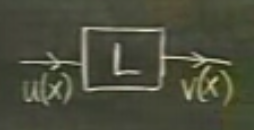

Ders 11
Bu ders oldukça teorik olacak ama içindeki fikirler bu derste öğretilen en önemli fikirlerin arasında. Şu denklemi hatırlarsak
$$ y" + p(x)y' + q(x)y = 0 $$
Bu denklemin çözüm yöntemi iki tane bağımsız $y_1$ ve $y_2$ bulmaktan geçiyordu. Bağımsızlığın tanımı mesela $y_2$'nin $y_1$'in "katı" olmaması, yani bir çözümü tamsayı bir sabitle çarpınca diğerini elde edememeliyiz. Yani $y_2 \ne cy_1$, ve $y_1 \ne c'y_2$, ve $y_1 = 0$ ise $y_2$ sıfır olmamalı.
Üsttekileri belirtmemizin sebebi neydi? Ki böylece normal diferansiyel denklemin (ODE) tüm çözümlerinin $y_1$ ve $y_2$'nin bir lineer kombinasyonu olduğunu söyleyebilmek, yani
$$ y = c_1 y_1 + c_2 y_2 $$
Bu derste cevaplandıracağımız soru şu: Niye?
Soru 1: Niye $c_1 y_1 + c_2 y_2$'in hepsi bir çözümdür?
Bu soruyu bu dersteki öğrenciler cevaplayabilir herhalde, fakat temiz, öz, zarif (elegant) bir şekilde cevaplayabilmek önemli olan ve aslında bu dersin de konusu. Bu cevabı öz, temiz bir şekilde veremezsek, daha ileride daha çetrefil işleri halledemeyiz.
Birinci soru lineer kombinasyonların niye çözüm olduklarını cevaplayacak, fakat "tüm" çözümlerin onlar olduğunu daha zor olan 2. sorunun cevabı belirleyecek.
Soru 2: Niye tüm çözümler bunlardır?
Birinci sorunun cevabı üst üste eklenebilmek (superposition) prensibi sayesinde cevaplanacak, ki bu prensip lineer kombinasyon argümanıyla aynı şey. Ek bir not bu prensibin ODE hangi dereceden olursa olsun (yani 2 olduğu gibi, 3, 4, vs. bile olabilir, form değişmediği sürece derece artabilir) prensibin geçerli olmasıdır.
Bu ispatı yapmanın temiz yöntemlerinden biri, azıcık yol dışına çıkıp (detour), lineer operatörlerden bahsetmektir. Bu operatörleri dersimizin geri kalanında sürekli kullanacağız, onları iyice tanımamız iyi olur.
Amacım üst üste eklenebilme prensibinin ispatı, oraya gelirken, değişik yerlere girip çıkacağız. Ana formu tekrar yazalım.
$$ y" + p(x)y' + q(x)y = 0 $$
Şimdi bu formu türev alma operatörünü kullanarak tekrar yazacağım. Operatör $D$, bir kere türev al demektir, $D^2$ iki kere türev al demektir. O zaman
$$ D^2y + pDy + qy = 0 $$
$y$'yi dışarı çekelim
$$ (D^2 + pD + q)y = 0 $$
Burada dikkat: insanlar yukarıdaki ibareyi "parantez içinde bir şeyler çarpı y" diye okumaya meyilli oluyor, bu doğru değil. Böyle bir ima var gibi ama gerçekte olan bu değil, çünkü D operatörü y "üzerinde" işlem yapan bir operatör. Aslında üsttekini yaparken amacım şuydu, parantez içindeki her şeyi başlına başına tek bir operatör haline çevirmek, ki bu operatöre $L$ adı verelim
$$ \underbrace{(D^2 + pD + q)}_{L}y = 0 $$
O zaman geriye
$$ Ly = 0 $$
kalır. Formel olarak $L$'nin tanımı üsttekidir, onu zihnimizde bir kutu olarak ta canlandırabiliriz, kutuya bir fonksiyon giriyor, dışarı başka bir fonksiyon çıkıyor.

Daha da detaylandırmak gerekirse, sayılar için fonksiyonlar neyse, fonksiyonlar için operatörler o'dur. Bir fonksiyona sayı girer, dışarı sayı çıkar, bir operatöre ise fonksiyon girer, bu fonksiyon değişime uğrayıp dışarı başka fonksiyon olarak çıkar. Türev alma operatörü en basit örneklerden biridir, mesela $x^2$ fonksiyonu türev operatörü $D$'ye girerse, dışarıya yeni bir fonksiyon $2x$ çıkar.
ODE'ye dönersek, üstteki ODE'yi çözmek demek $L$ kutusundan sıfır çıktığını düşünmek ve bunun olması için kutuya ne girdiğini bulmaya çalışmak. Bir ODE'yi çözmek, o zaman, bir tersine çevirme (inverse) problemidir. Tabii ters yönde gitmek ileri yönde gitmekten daha zordur.
Bu operatörün lineer olduğunu hatırlayalım. Bu, operatör fonksiyonlarla iş gördüğü zaman belli özellikler gösterir.
$$ L(u_1 + u_2) = L(u_1) + L(u_2) $$
$$ L(cu) = cL(u)$$
ki $c$ bir sabit, $u$, $u_1$ ve $u_2$ fonksiyonlardır.
Üstteki iki ifade lineerliğin iki kuralıdır. Bu kurallar normal fonksiyonlar için de geçerlidir bu arada.
Örnek? $D$ operatörü lineer bir operatördür. Çünkü, mesela
$$ (u_1 + u_2)' = u_1' + u_2' $$
$$ (cu)' = cu' $$
Bu Calculus dersinden bildiğimiz bir şey. Yani en temel Calculus'tan beri bildiğimiz üstteki kurallar aslında $D$ operatörünün lineer bir operatör olduğunun da göstergesidir.
Not: Ya peki çarpma? O da bir şekilde duruma dahil mi? Onun da kullanıldığı bazı durumlar var ama lineerlik bağlamında konumuzun dışında.
Neyse, tüm bu kuralları üst üste eklenebilme prensibini ispatlayabilmek için ortaya koyduk, şimdi ispatın kendisine gelelim.
Teori
ODE'miz şöyle:
$$ Ly = 0 $$
Eğer $y_1$ ve $y_2$ çözüm ise alttaki de bir çözümdür.
$$ y = c_1 y_1 + c_2 y_2 $$
İspat
$L$ operatörünü üstteki kombinasyona uygulayalım:
$$ L(c_1 y_1 + c_2 y_2) = L(c_1 y_1) + L(c_2 y_2)$$
$$ = c_1L(y_1) + c_2L(y_2)$$
Şimdi yapmaya çalıştığım bunu sıfır olduğunu göstermek. Eğer $y_1$ bir çözüm ise o zaman $Ly=0$'dan hareketle $L(y_1)$'in sıfır olması gerekir. Aynı şekilde $L(y_2) = 0$.
$$ = c_1 \cdot 0 + c_2 \cdot 0 = 0 $$
İspat tamamlandı. Bu argümanı ODE'nin orijinal formunu kullanarak ta yapabilirdik tabii, ama o zaman değişkenleri yerine koyup cebirsel gruplama yapacak, bir sürü işlem içine girecektik. Bu bize sonucu verecekti, ama ispatın niye böyle sonuç verdiğini açık bir şekilde söylemeyecekti. İspat başarılı oldu çünkü $L$ bir lineer operatördü.
Şimdi daha zor olan ikinci soruya gelelim. Bu soruyu cevaplayacağız, ama bir yan yola girerek, cevabı "başlangıç değer problemini çözme" açısından anlamaya uğraşacağız, başlangıç değerlerini formüle uydurarak (fitting) bir yere gelmeye çabalayacağız.
Teori
Tüm lineer kombinasyonları bir küme olarak düşünelim,
$$ \bigg\{ c_1y_1 + c_2y_2 \bigg\} $$
Bana hangi başlangıç değerini verirsen verin, bu küme içinde ona uygun bir $c_1$ ve $c_2$ bulabilirim.
İspat
Bu ispatı yaparken şimdiye kadar ODE çözerken ödevlerde geliştirdiğimiz başlangıç değerlerini kullanıp sabitleri hesaplama becerisinden faydalanacağız, ama sayılar yerine semboller kullanacağız. Diyelim ki
$$ y(x_0) = a $$
$$ y(x_0) = b $$
Yerine koyarsak
$$ y = c_1y_1 + c_2y_2 $$
$$ y' = c_1y_1' + c_2y_2'$$
$x=x_0$'i yerine koyalım
$$ y = c_1y_1(x_0) + c_2y_2(x_0) = a$$
$$ y' = c_1y_1'(x_0) + c_2y_2'(x_0) = b$$
Ödev problemlerinde $y_1$ ve $y_2$ somut fonksiyonlar oluyordu, $e^x$ gibi mesela. Burada sadece onun yerine sembolik değerler kullanıyorum.
Şimdi üstteki iki denkleme bakalım. Bu bir beraber çözülecek (simultaneous) lineer denklem sistemi değil midir? Çözülecek, bulunacak değişkenler hangileri? $c_1$ ve $c_2$. Buna tam alışkın değiliz, genellikle çözülecek değişkenler terimlerin önünde değil arkasında olur, üstelik $c_1$ ve $c_2$ şimdiye kadar hep "sabit" olarak etiketlediğimiz şeyler, ama biraz daha düşünürsek ve geri kalan arap saçı gibi terimlere dikkatlice bakarsak lineer sistemi görebiliriz. Bu sistemde değişkenler $c_1$ ve $c_2$.
Peki şimdi şu soruyu soralım. Üstteki sistemin ne zaman bir çözümü vardır? Sistem her zaman çözülemeyebilir. Cevap: Eğer katsayı matrisinin tersi alınabiliyor ise (invertible), yani matrisin determinantı sıfır haricinde bir değer olmalı.
$$ \left|\begin{array}{rr} y_1 & y_2 \\ y_1' & y_2' \end{array}\right|_{x_0} \ne 0 $$
Determinant işareti $|$'nin alt köşesindeki $x_0$, matris içindeki tüm fonksiyonların $x_0$ verilerek elde edilen sonuçlarını kullanmamız gerektiğini söylüyor.
Üstteki determinant önemli bir determinant, ve bir ismi var: Wronskian. Sembolik kullanımi ise şöyle: $W(y_1, y_2)$. Hepsini bir arada belirtirsek,
$$ W(y_1, y_2) = \left|\begin{array}{rr} y_1 & y_2 \\ y_1' & y_2' \end{array}\right| $$
Wronskian'ı ona geçilen iki fonksiyonu biliyorsak hesaplayabiliriz, ama $W$, $y_1$ ve $y_2$'nin fonksiyonu değil. Wronskian $x$'in bir fonksiyonu aslında.
Wronskian'ın sıfır olmama durumunu nasıl ispatlarız? Diyelim ki $y_2$ ve $y_1$ birbirine bağımlı (dependent), yani $y_2 = cy_1$. Bunun böyle olmadığını biliyoruz çünkü ODE'nin farklı çözümleri var. Ama olduğunu düşünelim, ve üstteki determinanta bakalım, $y_2 = cy_1$ olması ne demektir? $y_2' = cy_1'$ şartının da geçerli olması demektir. Ve bu şart gerçekleşirse, o zaman Wronskian, her $x$ değeri için, her zaman, kesinlikle sıfır olacaktır, çünkü artık iki kolon tamamen birbirinin katı haline gelmiştir.
Ödev sorularında öğrencinin ispatlamasını istediğimiz teori bu.
Teori
Eğer $y_1$ ve $y_2$ ODE'mizin çözümü ise, o zaman sadece iki seçenekten biri doğru olabilir. Ya her $x$ değeri için $W(y_1,y_2) = 0$ (aslında her $x$ değeri için sözü fazlalık, çünkü Wronskian tanımı zaten o ifadeyi kapsıyor, ama bu bir giriş dersi olduğu için tekrarlıyoruz), ya da Wronskian hiçbir zaman sıfır değil.
Şimdi, bir parantez daha açıyoruz. Bu ikinci parantez de kapanınca, üstteki "2. sorunun" cevabını vermek için elimizde tüm gerekli araçlar olacak.
Yukarıda ODE çözümünün tüm çözümlerinin şurada olduğunu belirtmiştik
$$ \bigg\{ c_1y_1 + c_2y_2 \bigg\} $$
Önemli nokta şu ki, $y_1$ ve $y_2$ öyle "özel", "kutsal" çözümler değiller. Şunu da söyleyebilirdik ve üstteki ifade ile aynı şey olurdu
$$ \bigg\{ c_1'u_1 + c_2'u_2 \bigg\} $$
ki $u_1$ ve $u_2$ herhangi başka bir lineer olarak bağımsız çözümler.
Bunu niye söyledik? $y_1$ ve $y_2$ genelde denklemi çözdüğümüz zaman elde ettiğimiz kolay çözümlerdir, mesela $e^x$, $e^2x$, $\cos(x)$, vs. türünde. Çözümü bu tür öğeleri kullanarak yazmak bir yöntem tabii, fakat tek yöntem değil. Bazı ODE'ler için "normalize edilmiş çözümler" bulmak daha iyi.
Normalize edilmiş çözümler belli bazı özel başlangıç şartlarını tatmin eden çözümlerdir. Eğer $Y_1$ ve $Y_2$'yi normalize edilmiş çözümler olarak kabul edersek, bu şartlar
$$ Y_1(0) = 1, \quad Y_2(0) = 0 $$
$$ Y_1'(0) = 0, \quad Y_2'(0) = 1 $$
Örnek
$$ y" + y = 0 $$
Standart çözümler $y_1 = \cos(x)$, $y_2 = \sin(x)$. $y_1$'in 0'daki değeri nedir? 1. $y_1'$'in sıfırdaki değeri nedir? 0. Demek ki $y_1$ normalize edilmiş, yani $Y_1$. $y_2$ aynı şekilde $Y_2$ olur.
Not: Normalize çözümleri çoğunlukla bir bakışta bu kadar kolay göremiyoruz tabii ki.
Örnek
$$ y" - y = 0 $$
Karakteristik denklemler 1, ve -1, o zaman çözüm $y_1 = e^x$ ve $y_2 = e^{-x}$.
Genel çözüm
$$ y = c_1 e^x + c_2 e^{-x} $$
Buradan normalize çözümleri, mesela $Y_1$, nasıl buluruz? Başlangıç şartlarını yerine getirerek. Bu arada $y'$
$$ y' = c_1 e^x - c_2 e^{-x} $$
Şartları koyalım. $y_1(0)$
$$ c_1 + c_2 = 1 $$
$y_1'(0)$
$$ c_1 - c_2 = 0 $$
Bu bir denklem sistemi yarattı, o zaman $c_1 = c_2 = 1/2$. O zaman
$$ Y_1 = \frac{e^x + e^{-x}}{2} $$
$Y_2$'yi benzer şekilde buluruz, hesapları yaptıktan sonra sonuç
$$ Y_2 = \frac{e^x - e^{-x}}{2} $$
çıkacaktır. Yani örnek ODE'miz için bu iki çözüm normalize edilmiş çözümlerdir. Bu çözümler asıl çözümlerden "daha iyi", çünkü başlangıç şartları daha "güzel". Çözüme ve türevini sıfır noktasında hesaplayınca bunu görüyoruz, sonuç ya 0 ya da 1 geliyor. Temiz. Bu arada bu örnekte elde ettiğimiz $Y_1$, $\cosh(x)$ (hiperbolik kosinüs) ve $Y_2$, $\sinh(x)$ (hiperbolik sinüs) olarak bilinir.
Mühendisler normalize çözümleri çok severler, çünkü eğer $Y_1$ ve $Y_2$ sıfırda normalize edilmişse, o zaman başlangıç değer problemi, yani bizim klasik ODE'miz artı
$$ y(0) = y_0 $$
$$ y'(0) = y_0' $$
denkleminin çözümü şöyledir
$$ y = y_0 Y_1 + y_0' Y_2 $$
Diğer bir deyişle, eğer bir denklemin normalize çözümlerini bulmuşsak / biliyorsak, genel çözüm için başlangıç şartlarını olduğu gibi alıp genel çözümü yaratmak için kullanabiliriz.
Üstteki $y$'nin doğru olup olmadığı kontrol edilebilir. Mesela $y(0)$ nedir? O noktada $Y_1(0)=1$, $Y_2(0)=0$ olduğuna göre $y(0)=y_0$ elde ederiz, ki bu üstteki başlangıç şartları ile uyar. Geri kalanını siz kontrol edebilirsiniz.
Böylece ikinci parantezi kapattık. Artık "büyük teori" için gereken her şey var.
Mevcudiyet ve Özgünlük Teorisi (Existence and Uniqueness Theorem)
Standart ODE
$$ y" + py' + qy = 0 $$
öyle ki $p$ ve $q$ her $x$ için sürekli fonksiyonlar ("iyi" fonksiyonlar yani, katsayılar hiçbir noktada patlamıyor).
O zaman, bu teoriye göre, verilen başlangıç şartları
$$ y(0) = A $$
$$ y'(0) = B $$
uyumlu bir çözümü, ve sadece bir tane çözüm vardır.
Bir çözüm olması teorinin "mevcudiyet" tarafı, o çözümün tek mümkün çözüm olması teorinin özgünlük tarafı.
İddia ediyorum ki
$$ \bigg\{ c_1Y_1 + c_2Y_2 \bigg\} $$
kümesi tüm çözümleri içeriyor.
İspat
Verilen herhangi (arbitrary) bir çözüm $u(x)$, ki
$$ u(0) = u_0 $$
$$ u'(0) = u_0' $$
alınıp şu şekilde kullanılınca
$$ u_0 Y_1 + u_0'Y_2 $$
bu ifade başlangıç şartlarıyla uyumlu olur.
Ekler
Dersler 9-11 içeriğinde ikinci derece lineer diferansiyel denklemin eğer iki çözümü varsa onların lineer birleşiminin yeni bir çözüm olacağını aktardık, başlangıç şartlarını dahil edince bir çözüm bulunacağını gördük. Wronskian bu bağlamda iki çözümün "birleştirilebilir" olup olmadığını kontrol ediyordu. Fakat bulduğumuz çözümün özgün (unique) olup olmadığını hala bilmiyoruz, en azından şu anda kadar onun için teorik bir ispat görmedik.
$$ ay" + by' + cy = 0 $$
Mesela üstteki gibi sabit katsayılı ikinci derece denklem çözümü için $e^{rt}$ seçimi yaptık, bunu bir bilgili tahmin (ansatz) olarak gerçekleştirdik, fakat bu seçimin temeli nedir? Seçilen fonksiyon özgün çözüm müdür?
Sezgisel olarak $\exp$ bazlı bir çözüm işleyeceğini bilebilirdik, çünkü birinci derece baz lineer diferansiyel denklemin çözümü bir $\exp$ içerir. Sezgisel tahmin şöyle devam eder, ikinci derece lineer denklemi birinci derece diferansiyel denklem sistemine çevirebileceğimize göre $\exp$ fonksiyonu seçimi normaldir.
Ya da, şöyle düşünürdük, üstteki formül bize şunu çıtlatıyor sanki, ikinci türev, birinci ve sıfırıncı türevlerin lineer kombinasyonu olarak temsil ediliyor olabilmeli [2, sf. 158] .. Bu bizi yine $y = e^{rt}$ şeklinde bir formüle itebildi, çünkü $e^{rt}$'nin türevleri bir sabit çarpı $e^{rt}$'nin kendisi olacaktır.
Fakat bize akıllı tahminlerin ötesinde çözümün varlığını ve özgünlüğünü kanıtlayan net, kesin (rigourous) bir ispat gerekiyor. Önce en temel başlangıç değer problemi (initial value problem -IVP-) ile başlayalım.
$$ y' = f(x,y), \quad y(x_0) = y_0 \qquad (1) $$
Üstteki IVP yerine alttaki gibi, ona eşit bir entegral formülü geçirebiliriz,
$$ y(x) = y_0 + \int_{x_0}^{x} f[t, y(t)] \mathrm{d} t \qquad (2) $$
Bu formülü (1)'in entegralini alarak elde ettik, bu bariz, başlangıç şartını $y_0$ terimi üzerinden dahil ettik.
Çözüme olan iyi bir yaklaşıksallama entegralde $y_0$ kullanmak ve böylece yeni bir daha iyi yaklaşık formül $y_1$ elde etmek.
$$ y_1(x) = y_0 + \int_{x_0}^{x} f[t, y_0] \mathrm{d} t $$
Özyineli yaklaşım devam ediyorf,$y_1$'i kullanarak daha iyi bir yaklaşıksallama elde edebiliriz belki, mesela $y_1$'i (2) formülüne sokunca bir $y_2$ gelir,
$$ y_2(x) = y_0 + \int_{x_0}^{x} f[t, y_1] \mathrm{d} t $$
Bu işlemin $n$'inci adımında
$$ y_{n}(x) = y_0 + \int_{x_0}^{x} f[t, y_{n-1}] \mathrm{d} t $$
Bu metota Picard'ın ardı ardına yapılan yaklaşıksallama işlemleri (Picard's method of successive approximations) ismi verilir.
Bir örnek üzerinde görelim. Alttaki basit IVP'nin
$$ y' = y, \quad y(0)=1 $$
bariz çözümü $y(x) = e^x$. Şimdi bu sonuca üstteki entegral formülü ile erişmeye uğraşalım. Eşdeğer entegral formülü
$$ y(x) = 1 + \int _{0}^{x} y(t) \mathrm{d} t $$
Özyineli formüllerin şablonu
$$ y_n(x) = 1 + \int_{0}^{x} y_{n-1}(t) \mathrm{d} t $$
$$ y_1(x) = 1 + \int_{0}^{x} \mathrm{d} t = 1 + x $$
$$ y_2(x) = 1 + \int_{0}^{x} (1+t) \mathrm{d} t = 1 + x + \frac{x^2}{2} $$
$$ y_3(x) = 1 + \int_{0}^{x} (1 + t + \frac{t^2}{2}) \mathrm{d} t = 1 + x + \frac{x^2}{2} + \frac{x^3}{2 \cdot 3} $$
Genel gidişatın ne olduğunu görmeye başladık herhalde, bu özyineli formüller sonuçta
$$ y_n(x) = 1 + x + \frac{x^2}{2!} + \frac{x^3}{3!} + ... + \frac{x^n}{n!} $$
şekline bürünür. Bu özyineli yaklaşıksallamalar bir nihai sonuca yakınsayacaktır, üstteki formülün $e^x$ ifadesinin güç serisi açılımı olduğunu hatırlayabiliriz. Böylece özgün, nihai sonucu net olarak ispatlamış olduk.
Genel özgün çözümün mevcudiyeti için [3, sf. 543], [5, 10] kaynaklarına bakılabilir, ikinci ve daha yüksek diferansiyel denklemlerin özgün çözüm varlığı dolaylı olarak burada ispatlanıyor, mesela [5] kaynağına bakınca, normal (ordinary) diferansiyel denklemler için teori şöyle der,
Alttaki verili IVP için
$$ y'(x) = F(x,y(x)), \quad y(a) = Y $$
eğer $F$ $x$ içinde sürekli ve $y$ içinde, başlangıç noktası $x \in (a-h,a+h)$, $y \in (Y-l,Y+l)$ etrafında Lipschitz [4] ise, o zaman ODE'nın daha ufak bir aralık $x \in (a-r,a+r)$ içinde özgün bir çözümü vardır bu çözüm sürekli olarak $Y$'ye bağlıdır.
İspat genel ODE için bir Picard özyinelemesi yapar, ve bu serinin özgün bir $y(x)$ çözümüne yakınsadığını bu genel şart için ispat eder.
Ardından hayali herhangi bir diğer çözüm $u(x)$ farzedilir, ve bu çözümün de $y(x)$ olması gerektiği ispatlanır. Bu ispatı verelim [5, sf. 13], elde etmeye uğraşacağımız sonuç herhangi bir diğer $u(x)$ için $|y(x)-u(x)|$ değerinin sıfır olması gerektiği.
Bir ODE'nin entegral formundaki açılımı
$$ y(x) = Y + \int_{0}^{x} F(x,y(x)) \mathrm{d} s $$
olduğunu hatırlayalım. $u$ açılımı benzer şekilde olacaktır. Hem $u$ hem de $y$ $x \in (a-r,a+r)$ içinde süreklidir, çünkü her iki fonksiyon da sürekli fonksiyonların entegrali, o zaman
$$ |y(x)-u(x)| < C, \quad \forall \in [a-r,a+r] \qquad (3) $$
Şimdi $|y(x)-u(x)|$ işlemini entegral formunda açalım,
$$ |y(x)-u(x)| = \bigg| \int _{a}^{x} F(x,y(s)) - F(x,u(s)) \bigg| \qquad (4) $$
Lipschitz tanımını hatırlarsak, $\big| F(x,y) - F(x,\tilde{x}) \big| \le k |y-\tilde{y}|$. Bu ifadeyi üstteki formülün sağ tarafına sokarsak,
$$ \le \int _{a}^{x} k|y(s)-u(s) | \mathrm{d} s \qquad (5) $$
(3) eşitsizliğini kullanınca
$$ \le k C |k-a| $$
Şimdi ilginç bir numara yapacağız, diyelim ki aynı türetimi yine yaptık, (5) noktasına gelince (4)'teki $|y(x)-u(x)|$ ifadesini (5)'teki $|y(s)-u(s)$ bölümüne sokabiliriz, şöyle bir şey oluyor,
$$ |y(x)-u(x)| = \bigg| \int _{a}^{x} F(x,y(s)) - F(x,u(s)) \bigg| $$
$$ \le \int _{a}^{x} k|y(s)-u(s) | \mathrm{d} s $$
$$ \le \int _{a}^{x} k \cdot k \cdot C |s-a| \mathrm{d} s $$
$$ \le C k^2 \frac{|x-a|^2}{2} $$
İki üstteki formül (4) ifadesinin (5)'e yerleştirilmesi ile mümkün oldu. Biraz düşününce bu işlemi istediğimiz kadar tekrarlayabileceğimizi görebilirdik, ve şu sonuca erisebilirdik,
$$ |y(x)-u(x)| \le \frac{C k^n |x-a|^n}{n!} \to 0, \quad n \to \infty $$
Yani $y(x)$ ve $u(x)$ farkı sıfırdır, demek ki $y(x)$ ve $u(x)$ aynı fonksiyon olmalıdır. Seçilen herhangi bir diğer $u(x)$ özgün sonuç $y(x)$'ten başkası olamaz.
Kaynaklar
[1] Boyce, Elementary Differential Equations Boundary Value Problems
[2] Nagle, Fundamentals of Differential Equations and Boundary Value Problems
[3] Simmons, Differential Equations With Applications and Historical Notes
[4] Bayramlı, Fonksiyonel Analiz, Ders 2
[5] Muscat, Ordinary Differential Equations
Yukarı